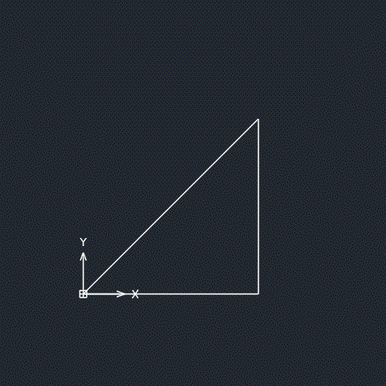
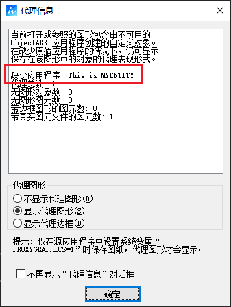

通过自定义实体，我们可以将多个基础实体封装成为一个整体，并自定义该实体的存储、显示和行为（分解、移动）等属性。
通过向导生成自定义实体类
1. 右键工程选择添加新项，在对话框中找到ZrxWizExt向导，选择ZrxCustomObjectWizard
2. 设置自定义实体名称后，选择父类为ZcDbEntity，勾选Osnap Protocal和Grip-points Protocal，两者分别用于自定义实体的捕捉点，以及实体被选中时显示的夹点。
通过向导自动生成的自定义实体类中，包含了多个需要我们实现的虚函数：
class CMyEnt
: public ZcDbEntity
{
...
public:
CMyEnt();
virtual ~CMyEnt();
// 用于从DWG图纸中读写自定义实体相关的数据
virtual Zcad::ErrorStatus dwgOutFields (ZcDbDwgFiler *pFiler) const;
virtual Zcad::ErrorStatus dwgInFields (ZcDbDwgFiler *pFiler);
protected:
// 绘制图像
virtual ZSoft::Boolean subWorldDraw (ZcGiWorldDraw *mode);
virtual ZSoft::UInt32 subSetAttributes (ZcGiDrawableTraits *traits);
public:
// 设置捕捉点
virtual Zcad::ErrorStatus subGetOsnapPoints(
ZcDb::OsnapMode osnapMode,
ZSoft::GsMarker gsSelectionMark,
const ZcGePoint3d &pickPoint,
const ZcGePoint3d &lastPoint,
const ZcGeMatrix3d &viewXform,
ZcGePoint3dArray &snapPoints,
ZcDbIntArray &geomIds) const;
virtual Zcad::ErrorStatus subGetOsnapPoints(
ZcDb::OsnapMode osnapMode,
ZSoft::GsMarker gsSelectionMark,
const ZcGePoint3d &pickPoint,
const ZcGePoint3d &lastPoint,
const ZcGeMatrix3d &viewXform,
ZcGePoint3dArray &snapPoints,
ZcDbIntArray &geomIds,
const ZcGeMatrix3d &insertionMat) const;
// 设置夹点
virtual Zcad::ErrorStatus subGetGripPoints(
ZcGePoint3dArray &gripPoints,
ZcDbIntArray &osnapModes,
ZcDbIntArray &geomIds) const;
virtual Zcad::ErrorStatus subMoveGripPointsAt(
const ZcDbIntArray &indices,
const ZcGeVector3d &offset);
virtual Zcad::ErrorStatus subGetGripPoints(
ZcDbGripDataPtrArray &grips,
const double curViewUnitSize,
const int gripSize,
const ZcGeVector3d &curViewDir,
const int bitflags) const;
virtual Zcad::ErrorStatus subMoveGripPointsAt(
const ZcDbVoidPtrArray &gripAppData,
const ZcGeVector3d &offset,
const int bitflags);
...
}
创建自定义实体
本章将创建一个三角形的自定义实体，实现了基本的夹点编辑和获取自动捕捉点等行为。

设置实体名称
在ZCRX_DXF_DEFINE_MEMBERS宏中，可以修改当前自定义实体显示的名称，其中标红的为属性列表中展示的对象名称，标蓝的为实体说明，一般会在代理对象对话框中显示：

ZCRX_DXF_DEFINE_MEMBERS (
CMyEntity, ZcDbEntity,
ZcDb::kDHL_CURRENT, ZcDb::kMReleaseCurrent,
ZcDbProxyEntity::kNoOperation, MYENTITY, This is MYENTITY
)
添加私有变量
在类中添加一个ZcGePoint3d数组用于记录三角形三个顶点的值：
class CMyEnt
: public ZcDbEntity
{
...
private:
ZcGePoint3d m_verts[3];
...
};
构造函数
// 传入三个初始坐标，用于设置三个端点
CMyEnt(ZcGePoint3d pt1, ZcGePoint3d pt2, ZcGePoint3d pt3) {
m_verts[0] = pt1;
m_verts[1] = pt2;
m_verts[2] = pt3;
}
在DWG中读写顶点数据
需要将顶点的坐标值写入到DWG图纸中，这样下次打开图纸时，自定义实体才能正确显示：
Zcad::ErrorStatus CMyEnt::dwgOutFields (ZcDbDwgFiler *pFiler) const {
assertReadEnabled ();
Zcad::ErrorStatus es = ZcDbEntity::dwgOutFields(pFiler);
if (es != Zcad::eOk)
return (es);
if ((es = pFiler->writeUInt32(CMyEnt::kCurrentVersionNumber)) != Zcad::eOk)
return (es);
//将顶点坐标写入dwg中
for (int i = 0; i < 3; ++i) {
pFiler->writeItem(m_verts[i]);
}
return (pFiler->filerStatus());
}
Zcad::ErrorStatus CMyEnt::dwgInFields(ZcDbDwgFiler * pFiler) {
assertWriteEnabled();
Zcad::ErrorStatus es = ZcDbEntity::dwgInFields(pFiler);
if (es != Zcad::eOk)
return (es);
ZSoft::UInt32 version = 0;
if ((es = pFiler->readUInt32(&version)) != Zcad::eOk)
return (es);
if (version > CMyEnt::kCurrentVersionNumber)
return (Zcad::eMakeMeProxy);
//从dwg中读取顶点坐标
for (int i = 0; i < 3; ++i) {
pFiler->readItem(&m_verts[i]);
}
return (pFiler->filerStatus());
}
绘制图像
在subWorldDraw中可以绘制所需的实体，同时可以设置不同子实体的颜色等属性：
ZSoft::Boolean CMyEnt::subWorldDraw(ZcGiWorldDraw * mode) {
assertReadEnabled();
for (int i = 0; i < 3; ++i) {
int nextIndex = i + 1;
if (i == 2) {
nextIndex = 0;
}
// 设置后会影响后面绘制的所有实体颜色，如果只需要设置其中一个实体，需要通过该接口重新改回原色
mode->subEntityTraits().setColor(i + 1);
ZcGePoint3d points[2];
points[0] = m_verts[i];
points[1] = m_verts[nextIndex];
// geometry()下还能绘制其他基础实体对象，由此我们可以绘制出我们需要自定义实体
mode->geometry().polyline(2, points);
}
return (ZcDbEntity::subWorldDraw(mode));
}
设置夹点
指定夹点subGetGripPoints和移动夹点subMoveGripPointsAt两个函数均有两个重载方法，根据默认生成的注释，其中一个为较旧的方法，当我们需要使用旧重载方法时，需要在新方法中返回eNotImplemented。
由于本文创建的实体对象夹点功能较为简单，故仅使用ZcGePoint3dArray记录夹点坐标，如果需要在夹点中记录相关信息，则可以使用带有ZcDbGripDataPtrArray参数的方法：
Zcad::ErrorStatus CMyEnt::subGetGripPoints(
ZcGePoint3dArray &gripPoints,
ZcDbIntArray &osnapModes,
ZcDbIntArray &geomIds
) const {
assertReadEnabled();
//----- This method is never called unless you return eNotImplemented
//----- from the new getGripPoints() method below (which is the default implementation)
// 将三角形端点加入夹点集合
for (int i = 0; i < 3; ++i) {
gripPoints.append(m_verts[i]);
}
return Zcad::eOk;
}
Zcad::ErrorStatus CMyEnt::subMoveGripPointsAt(
const ZcDbIntArray &indices,
const ZcGeVector3d &offset
) {
assertWriteEnabled();
//----- This method is never called unless you return eNotImplemented
//----- from the new moveGripPointsAt() method below (which is the default implementation)
// 根据偏移向量修改交点坐标
m_verts[indices[0]] += offset;
recordGraphicsModified();
return Zcad::eOk;
}
Zcad::ErrorStatus CMyEnt::subGetGripPoints(
ZcDbGripDataPtrArray &grips,
const double curViewUnitSize,
const int gripSize,
const ZcGeVector3d &curViewDir,
const int bitflags
) const {
assertReadEnabled();
//----- If you return eNotImplemented here, that will force ZwCAD to call
//----- the older getGripPoints() implementation. The call below may return
//----- eNotImplemented depending of your base class.
return Zcad::eNotImplementedYet;
//return (ZcDbEntity::subGetGripPoints(grips, curViewUnitSize, gripSize, curViewDir, bitflags));
}
Zcad::ErrorStatus CMyEnt::subMoveGripPointsAt(
const ZcDbVoidPtrArray &gripAppData,
const ZcGeVector3d &offset,
const int bitflags
) {
assertWriteEnabled();
//----- If you return eNotImplemented here, that will force ZwCAD to call
//----- the older getGripPoints() implementation. The call below may return
//----- eNotImplemented depending of your base class.
return Zcad::eNotImplementedYet;
//return (ZcDbEntity::subMoveGripPointsAt(gripAppData, offset, bitflags));
}
设置捕捉节点
通过设置捕捉点，在CAD中使用捕捉功能时，才能识别到自定义实体中的节点，方便绘图时快速定位到特征节点，subGetOsnapPoints同样存在两个重载函数，我们选择使用参数较少的一个方法来实现：
Zcad::ErrorStatus CMyEnt::subGetOsnapPoints(
ZcDb::OsnapMode osnapMode,
ZSoft::GsMarker gsSelectionMark,
const ZcGePoint3d& pickPoint,
const ZcGePoint3d& lastPoint,
const ZcGeMatrix3d& viewXform,
ZcGePoint3dArray& snapPoints,
ZcDbIntArray & geomIds
) const {
assertReadEnabled();
// 绘制一个具有相同节点的多段线，通过调用多段线的捕捉节点来实现自定义实体的捕捉点
ZcDbPolyline* pPoly = new ZcDbPolyline();
for (int i = 0; i < 3; ++i) {
pPoly->addVertexAt(i, ZcGePoint2d(m_verts[i].x, m_verts[i].y));
}
pPoly->setClosed(true);
Zcad::ErrorStatus es = pPoly->getOsnapPoints(osnapMode, gsSelectionMark,
pickPoint, lastPoint, viewXform, snapPoints, geomIds);
delete pPoly;
return es;
}
在模型空间中插入自定义实体
操作与插入普通实体相同，需要注意的是，我们要在ZRX初始化时注册自定义实体类，并在ZRX卸载时删除该类：
void addMyEnt() {
CMyEnt* pEnt = new CMyEnt(ZcGePoint3d(0, 0, 0), ZcGePoint3d(100, 0, 0), ZcGePoint3d(100, 100, 30));
PostToModelSpace(pEnt, zcdbCurDwg());
}
void initapp()
{
CMyEnt::rxInit();
zcedRegCmds->addCommand(cmd_group_name, _T("addMyEnt"), _T("addMyEnt"), ZCRX_CMD_MODAL, addMyEnt);
}
void unloadapp()
{
deleteZcRxClass(CMyEnt::desc());
zcedRegCmds->removeGroup(cmd_group_name);
}
参考示例
更多用法请参考zrxsdk示例中的SignDb工程。